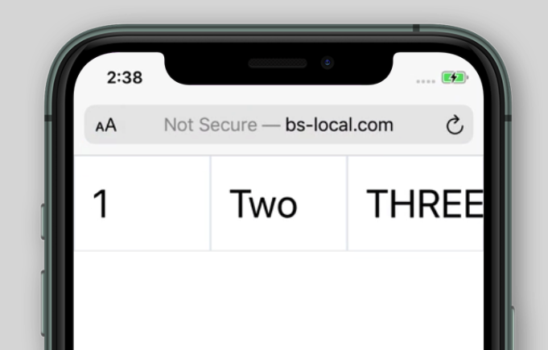
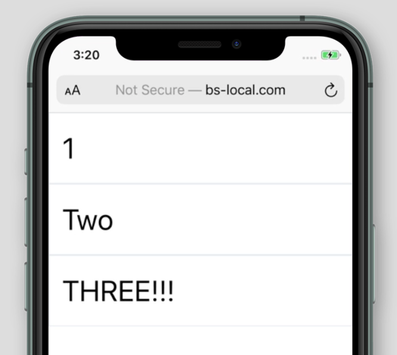

KIEI-451: Introduction to Software Development
Tailwind CSS Introduction
HTML, all by itself, is meant to describe the content and structure of web page. Cascading Style Sheets (CSS) is the web browser's standard presentation language – it defines what the page looks like – e.g. the layout of the page, the colors, fonts, sizes of the different elements, etc. Without CSS, websites look like they are straight out of the 20th century. For someone who's just getting started with web development, however, CSS can be cumbersome and time-consuming to learn. Strange syntax, browser idiosyncrasies, and the need to memorize many rules (and exceptions to the rules!) can make CSS quite intimidating, and hard to master.
Enter Tailwind. Tailwind is a CSS framework, that is, an open-source utility that helps web developers add look-and-feel to their HTML pages without worrying about fighting with actual CSS. And while it certainly would help to learn CSS at some point, should you want to take your web design skills further, Tailwind allows us to get to a reasonable level of design quickly and without too much wrangling with the low-level concepts of CSS.
But first, we do need to have a high-level understanding of the types of styling we can apply to our HTML, and how Tailwind helps us execute that styling. This is a reference for the basics; there are many more things you can do with Tailwind that are not outlined here – if you're interested in diving deeper, have a look at the official Tailwind documentation. Also – this page is created with Tailwind! Feel free to experiment with changing things, to see what happens. We can always restore the original from our course GitHub page.
Installing Tailwind
Getting Tailwind is quite simple. We add this one line of code, somewhere within the head element of any HTML document.
<link href="https://unpkg.com/tailwindcss@^2/dist/tailwind.min.css" rel="stylesheet" type="text/css">
This imports the Tailwind CSS library (from the Internet) into our web page, and it's ready to use.
The Basics
We'll notice that, once we've added the one-liner above to our web page, any formatting we expect the browser to make (such as making an h1 a big and bold headline, or a link blue and underlined, for example) will be removed. Tailwind makes no assumptions about how we want our elements to look, and to ensure that we always start with the same baseline, regardless of the browser or device we're using, all CSS styling (including the ones that come standard with the browser) are reset when Tailwind is added.
Tailwind works by providing a set of CSS classes that we can apply to any element on our HTML pages. A CSS class is simply an attribute that we can add to any HTML element, like this:
<h1 class="font-bold">Tacos</h1>
Tacos
Adding the attribute class="font-bold" to our h1 element is telling our HTML element to use one of the rules that comes with Tailwind – bold the text of any element that has the class name font-bold. Tailwind simply provides us with a huge list of these rules that we can use to affect how our HTML looks. We can also use more than one of these rules at a time, by separating the class names with a space:
<h1 class="font-bold uppercase text-blue-500">Tacos</h1>
Tacos
Now, our h1 element will be bolded, be transformed into all upper-case text, and be in a medium shade of blue.
So, how many of these rules does Tailwind have? A lot. Too many, in fact, to be covered in the scope of this course, but the rest of this reference will outline some of the ones that are most commonly used. We're also not going to rewrite the Tailwind documentation in its entirety here; rather, we'll be pointing to spots in the existing documentation and making it more clear for someone who's just getting started.
Colors
Tailwind's color classes apply to either text, borders, or backgrounds. The color codes are broken into three pieces, separated by a dash – the first is either text, border or bg, the second is the color (e.g. blue or orange or gray), and third component is the intensity of the color (light to dark), from 100 to 900. For example, text-red-500 will make the text of an element a medium shade of red, and bg-green-100 will make the background of an element a light green. See the complete default color palette for a reference.
Typography
| Class | Result |
|---|---|
|
text-xs text-sm text-base text-lg text-xl text-2xl text-3xl text-4xl text-5xl text-6xl |
Adjusts the font-size from extra-small to super-large |
|
font-hairline font-thin font-light font-normal font-medium font-semibold font-bold font-extrabold font-black |
Different levels of bold |
|
text-left text-center text-right text-justify |
Text alignment |
|
underline uppercase lowercase capitalize |
Text decoration/transformations |
Borders
| Class | Result |
|---|---|
|
border-0 border border-2 border-4 border-8 |
Adjusts the thickness of the border. The default thickness (i.e. when using simply border), is 1 pixel |
|
rounded-sm rounded rounded-md rounded-lg rounded-xl rounded-2xl rounded-3xl rounded-full |
Adjusts the roundness (radius) of the border |
Sizing
Sizes of things, whether text, boxes, images, or any other type of element, are defined relative to Tailwind's default spacing scale. That sounds scary, but all that means is that there's a unit system where each unit is 4 pixels. So 1 unit = 4 pixels, 2 units = 8 pixels, 3 units = 12 pixels, and so on. You'll need to use this occasionally for fine-tuning, but it's more likely that you'll use fluid (i.e. percentage-based) sizing in order to support responsive design.
| Class | Result |
|---|---|
|
w-0 w-1 w-2 w-3 w-96 |
Fixed width – adjusts sizing from 1 unit (4 pixels) to 96 (4 * 96 = 384 pixels) |
|
w-{fraction} w-full |
Fluid width – sizing relative to the element's parent element. fraction is just that – a fraction that represents the percentage of the parent's width to occupy; for example, an element with the class w-1/2 will occupy 1/2 of its parent element's width. w-full would occupy 100% of its parent's width. |
Box Model
The box model in CSS refers a simple idea – from a design perspective, every HTML element is a box – you just can't see it by default. And each element's box is made up of four things – the element's content (in technical terms, the "inner HTML"), the padding (the space inside the box), the border (the border around the box), and the margin (the space around the outside of the box, i.e. the distance away from other, adjacent elements). This is best illustrated by the following, taken from Mozilla's article on the box model:

The most important take-away from this, aside from the terminology, is that these four components of the box are all part of an element's size (i.e. width and height). For example, if an element has 200 pixels of content, 10 pixels of padding on all sides (top, right, bottom, and left), a 1 pixel border, and 20 pixels of margin on all sides, the element's width is 200 (content) + 10 (left padding) + 10 (right padding) + 1 (border left) + 1 (border right) + 20 (left margin) + 20 (right margin) = 262 pixels. This seems straightforward, but understanding how this calculation is made by the browser will help us with debugging potential issues with our layout later on.
| Class | Result |
|---|---|
|
m-{number} p-{number} |
Adds margin or padding on all sides, from 1 unit (4 pixels) to 64 (256 pixels) – for example, m-4 will add 16 pixels of margin to all sides of the element. |
|
ml-{number} mr-{number} mt-{number} mb-{number} pl-{number} pr-{number} pt-{number} pb-{number} |
Adds margin or padding on specific side (i.e. top, right, bottom, left), from 1 unit (4 pixels) to 64 (256 pixels) – for example, pt-4 will add 16 pixels of padding to the top side of the element. |
|
mx-{number} my-{number} px-{number} py-{number} |
Adds margin or padding on specific axis (i.e. x – left/right – or y – top/bottom), from 1 unit (4 pixels) to 64 (256 pixels) – for example, my-4 will add 16 pixels of padding to the top and bottom sides of the element. |
|
mx-auto my-auto m-auto |
Adds an "automatic" amount of margin around a fixed-width element, i.e. centers the element using an equal amount of space around it. We'll most commonly encounter a class of mx-auto, which will add "gutters" (i.e. space on the left and right) around a container element. A container is a simple class that will fix an element's width based on the current breakpoint (e.g. sm, md, lg). This is useful for a "fixed" layout – e.g. container mx-auto |
|
space-x-{number} space-y-{number} |
Adds space between each child element. For example, if you have a series of paragraphs or other elements, it can be cumbersome to add a class of my-4 to every element. Instead, you can set a class of space-y-4 to the parent element, in order to get a spacing of 4 between each child element, along the y axis. |
Layout
We can get pretty far with making our web pages look presentable using only the Tailwind classes outlined so far. As we try to design more sophisticated pages, however, we're going to find that we're generally limited to a vertical page design, where elements run from the top to the bottom of the page, and that making elements align nicely in a horizontal layout can be very challenging. In order to achieve horizontal layouts, we have to use a CSS feature called flexbox. Utilities for using flexbox are, of course, baked-in to Tailwind. There are a lot of them – we'll focus on just a few important techniques within the scope of this class.
Let's suppose we have three boxes of content we want to show in a horizontal row on our page.
We can achieve this quite simply with Tailwind and flexbox:
<div class="flex">
<div class="p-4 border text-4xl">1</div>
<div class="p-4 border text-4xl">Two</div>
<div class="p-4 border text-4xl">THREE!!!</div>
</div>
The flex class, when applied to an element, tells CSS that the child elements should be laid out according the rules of flexbox. By default, flexbox lays elements out horizontally, with the width of each child element defined by its inner content. We can also specify fixed widths, if we'd like:
<div class="flex">
<div class="w-16 p-4 border text-4xl">1</div>
<div class="w-32 p-4 border text-4xl">Two</div>
<div class="w-64 p-4 border text-4xl">THREE!!!</div>
</div>
We can see that the boxes are set to a fixed width of 16, 32, and 64 units wide. As mentioned earlier, this isn't a common approach – usually, we're going to set each box's width to a percentage of the parent element:
<div class="flex">
<div class="w-1/3 p-4 border text-4xl">1</div>
<div class="w-1/3 p-4 border text-4xl">Two</div>
<div class="w-1/3 p-4 border text-4xl">THREE!!!</div>
</div>
Here, each child element occupies exactly one-third of the parent element's total width – a much more common thing to see in a modern web layout – for example, an image with some text next to it, or perhaps a scrolling page with a sidebar used for navigation.
Responsive Design
The last thing to think about, in our introductory look at CSS with Tailwind, is responsive design. In the above example, our three elements are lined up horizontally, with each element occupying exactly 1/3 of the parent element's width. This looks fine on a widescreen computer, but this quickly breaks down on a smaller, vertical screen – for example, an iPhone in its normal portrait orientation.

We can see how the three-column layout, which looks great on a desktop computer, doesn't really work on the smaller mobile screen. What we'd prefer is for the column layout to be ignored at the smaller screen size, and for the three elements to simply flow from top to bottom, as if the columns we've defined weren't there at all. This is where responsive design comes to the rescue. Responsive design is just that – a design where the layout responds to changes in screen size. Ultimately, what we want is for our three-column layout to appear on screens that are large enough to support it, and for the layout to be ignored on anything smaller. Of course, Tailwind has these kinds of responsive design utilities built in, and they are quite straightforward to use.
Using Tailwind's responsive design utilities can be broken down into two parts: screen size (i.e. "breakpoints"), and the use of breakpoint-specifc classes.
| Breakpoint | Screen size (in pixels) |
|---|---|
| sm | 640 |
| md | 768 |
| lg | 1024 |
| xl | 1280 |
Each one of these "breakpoints" (i.e. sm, md, lg, and xl, correspond to a certain minimum screen width. For example, md is a code for the breakpoint that refers to a minimum of 768 pixels wide.
Every class name in Tailwind can be applied conditionally to a breakpoint. Consider the following:
<div class="text-red-500 md:text-purple-500">
We apply classes conditionally based on breakpoint by prefixing the class name with the name of the breakpoint and a colon. The above example translates to: Apply a text color of medium purple on browser windows 768 pixels or greater in width, otherwise apply a text color of medium red.
So, how do we solve our problem of "three-column layout to appear on screens that are large enough to support it, and for the layout to be ignored on anything smaller"? First, let's choose a breakpoint. We'll choose md in this case, but in practice, we'd experiement to see which one is best. Then, we'll make sure that our rules for creating horizontal columns (i.e. using flexbox with our 1/3 wide child elements) are only applied on md-sized windows or greater:
<div class="md:flex">
<div class="md:w-1/3 p-4 border text-4xl">1</div>
<div class="md:w-1/3 p-4 border text-4xl">Two</div>
<div class="md:w-1/3 p-4 border text-4xl">THREE!!!</div>
</div>
Using the md: prefix on our flex class name will ensure that it's only applied on windows 768 pixels or greater. On smaller sizes, that class name will be completely ignored. We also have to apply the same logic to our w-1/3 class name, so that class will be ignored on smaller screens, with our three child elements occupying 100% of the available screen width.
